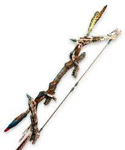
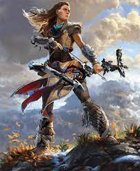
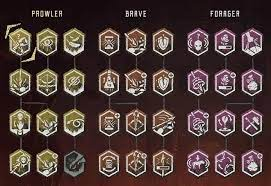

About Horizon Zero Dawn
Horizon Zero Dawn is a 2017 action role-playing game developed by Guerrilla Games and published by Sony Interactive Entertainment. The plot follows Aloy, a young huntress in a world overrun by machines, who sets out to uncover her past. The player uses ranged weapons, a spear, and stealth to combat mechanical creatures and other enemy forces. A skill tree provides the player with new abilities and bonuses. The player can explore the open world to discover locations and take on side quests. It was released for the PlayStation 4 in 2017 and Microsoft Windows in 2020.
Horizon Zero Dawn was praised by critics for its open world, story, visuals, combat, characterization, and the performance of voice actress Ashly Burch; however, the dialogue, melee combat, and character models received some criticism. The game won numerous awards and sold over 20 million copies by February 2022, making it one of the best-selling PlayStation 4 games. An expansion, The Frozen Wilds, was released in November 2017. A sequel, Horizon Forbidden West, was released for the PlayStation 4 and PlayStation 5 on 18 February 2022.
Gameplay
 Aloy can kill enemies in a variety of ways – setting traps such as tripwires using the Tripcaster, shooting them with arrows, using explosives, and a spear. Machine components, including electricity and the metal they are composed of, are vital to Aloy's survival; she can loot their remains for crafting resources. Ammo, resource satchels, pouches, quivers, resistance, antidotes, health potions, and traps can all be crafted. Weapons have modification slots for dealing more damage. Aloy wears a Focus, a small head piece that scans machines to determine their susceptibilities, identify their location, their level, and the nature of loot they will drop. Machines attack with defensive and offensive measures, and in either case react to a perceived threat by charging at it with brute force or projectiles. Exhibiting the behaviour of wild animals, some machines are inclined to move in herds, and others, with the ability to fly, do so in flocks. Unless hacked with the Override Tool, or sufficiently hit with corruption arrows, machines do not exert aggressive force against each other. Aloy also engages in battle with human enemies, such as bandits and the Eclipse cult.
Aloy can kill enemies in a variety of ways – setting traps such as tripwires using the Tripcaster, shooting them with arrows, using explosives, and a spear. Machine components, including electricity and the metal they are composed of, are vital to Aloy's survival; she can loot their remains for crafting resources. Ammo, resource satchels, pouches, quivers, resistance, antidotes, health potions, and traps can all be crafted. Weapons have modification slots for dealing more damage. Aloy wears a Focus, a small head piece that scans machines to determine their susceptibilities, identify their location, their level, and the nature of loot they will drop. Machines attack with defensive and offensive measures, and in either case react to a perceived threat by charging at it with brute force or projectiles. Exhibiting the behaviour of wild animals, some machines are inclined to move in herds, and others, with the ability to fly, do so in flocks. Unless hacked with the Override Tool, or sufficiently hit with corruption arrows, machines do not exert aggressive force against each other. Aloy also engages in battle with human enemies, such as bandits and the Eclipse cult.
 Aloy can dodge, sprint, slide, or roll to evade her enemies' advances. Hiding in foliage to ambush nearby enemies can ensure immediate takedowns. Swimming may reach enemies stealthily or places otherwise unreachable on foot. She is able to hack a selection of machines with the Override Tool, some of which can be turned into makeshift mounts. Three categories occur in the skill tree: "Prowler" concerns stealth, "Brave" improves combat, and "Forager" increases healing and gathering capabilities. To level up, Aloy attains experience points from individual kills and completing quests. Upgrades in each category result in more adept use of the skills learned, with "Prowler" leading to silent takedowns, "Brave" to aiming a bow in slow motion, and "Forager" to an enlarged medicine pouch. The Frozen Wilds added "Traveler", which unlocks the ability to jump off a mount to attack enemies. The game has a seamless open world with a day-night cycle and dynamic weather system.